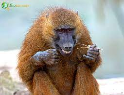

The pig, known scientifically as Sus scrofa domesticus, is a highly intelligent and social mammal that has been domesticated for thousands of years. Belonging to the Suidae family, pigs are characterized by their stout bodies, cloven hooves, and distinctive snouts. These animals are omnivores with a keen sense of smell, which they use for foraging and finding food. Pigs are remarkably adaptable and can be found in various environments around the world. Domestic pigs come in a wide range of breeds, each with its unique characteristics and appearances. While commonly associated with mud wallowing, pigs are actually quite clean animals and are known to create designated areas for waste. In addition to their role in agriculture, where they are raised for their meat (pork), pigs are also appreciated for their intelligence and are even kept as pets in some households.
Baboon
The baboon, belonging to the genus Papio, is a fascinating and highly adaptable primate found in various habitats across Africa and Arabia. These Old World monkeys are known for their distinctive appearance, with dog-like snouts, long limbs, and prominent ischial callosities (calloused pads on their buttocks). Baboons are social animals that live in hierarchical troops, exhibiting complex social structures. Their diet is omnivorous, consisting of a wide range of foods such as fruits, seeds, insects, and small mammals. Baboons are characterized by their vocalizations, including barks, grunts, and screams, which play a crucial role in communication within the troop. With their expressive faces and intricate social behaviors, baboons are captivating subjects for researchers studying primate behavior and evolution.

Panda
The giant panda, scientifically known as Ailuropoda melanoleuca, is an iconic and endangered species native to the mountainous regions of central China. Renowned for its distinctive black-and-white coat and charming appearance, the giant panda primarily subsists on a bamboo-dominated diet. Despite belonging to the order Carnivora, pandas exhibit a preference for bamboo shoots and leaves, supplementing their diet with occasional small mammals or birds. These solitary animals are known for their gentle demeanor and are often seen lounging in bamboo thickets. Conservation efforts have been implemented to protect the remaining wild panda populations, as their habitats are threatened by deforestation and human encroachment. The panda's charismatic image has made it a symbol of wildlife conservation worldwide, and various initiatives aim to preserve this beloved species for future generations.
Gibbon
Gibbons, belonging to the family Hylobatidae, are small to medium-sized apes found in the dense forests of Southeast Asia, including parts of China, Indonesia, and India. Recognized for their long arms, which are often longer than their legs, gibbons are superb brachiators, swinging effortlessly through the trees using their strong arms. They possess a throat sac that helps project their loud and melodious calls, which are used for communication and to establish territory. Gibbons are highly social and form monogamous pairs, engaging in elaborate duets as a form of bonding. Their diet consists mainly of fruits, leaves, and insects. Unfortunately, many gibbon species are facing threats such as habitat loss and illegal pet trade, making them vulnerable or endangered. Gibbons play a vital role in the ecosystems they inhabit, contributing to seed dispersal and maintaining the balance of the forest environment. Conservation efforts are crucial to ensure the survival of these acrobatic and vocal primates.